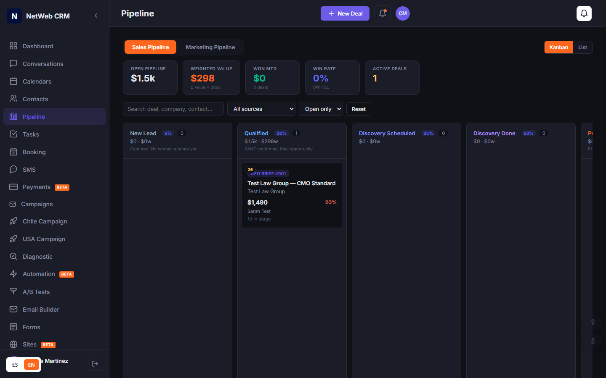
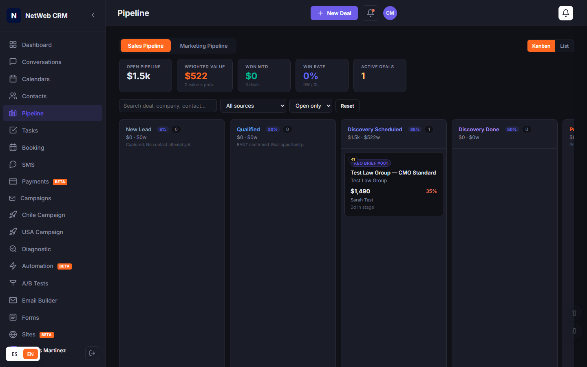
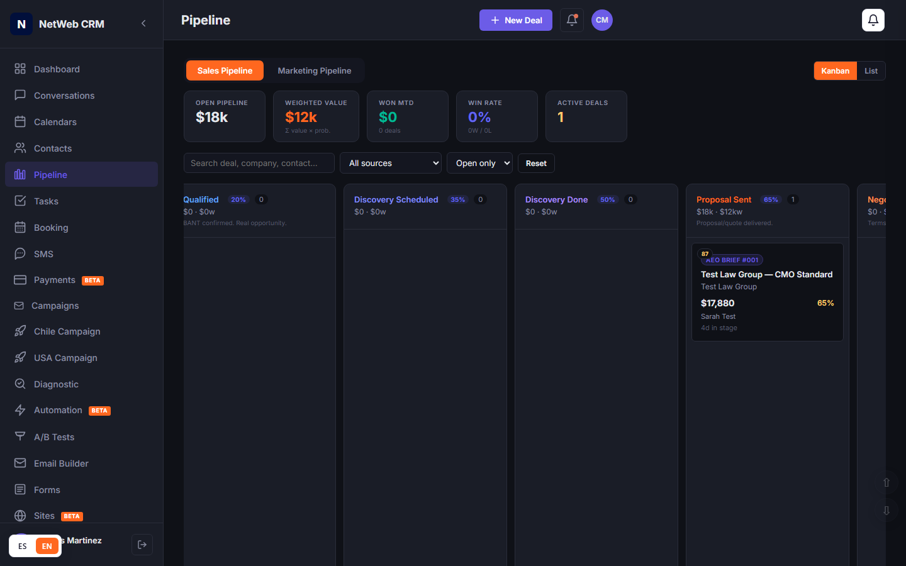
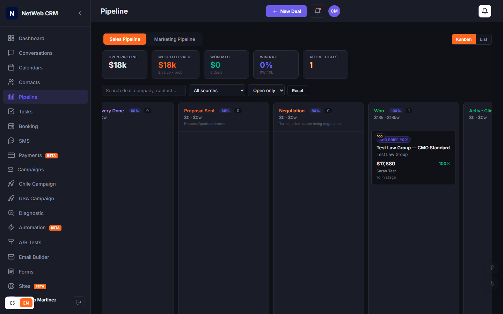
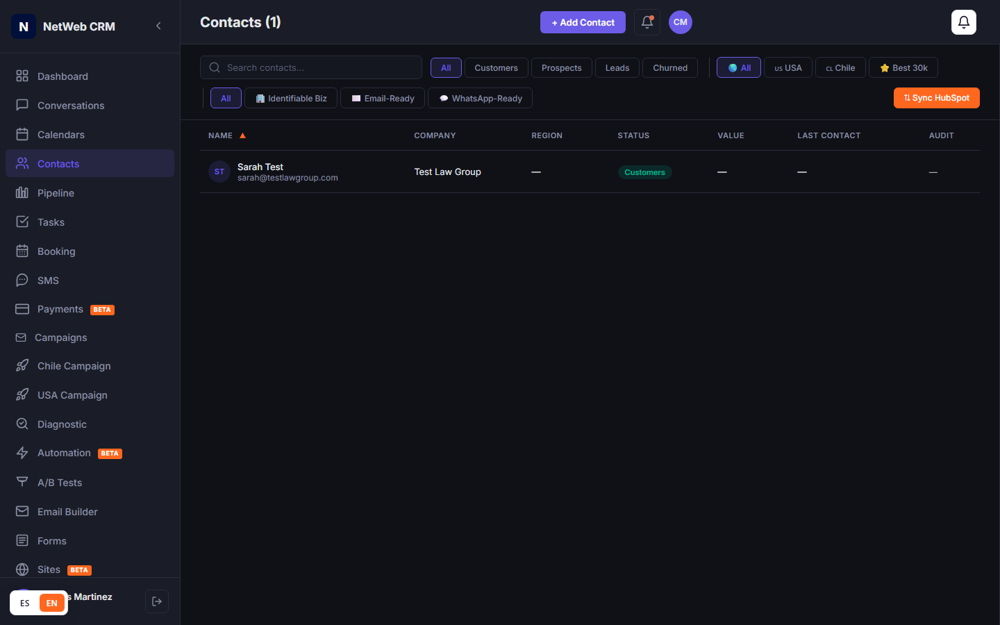
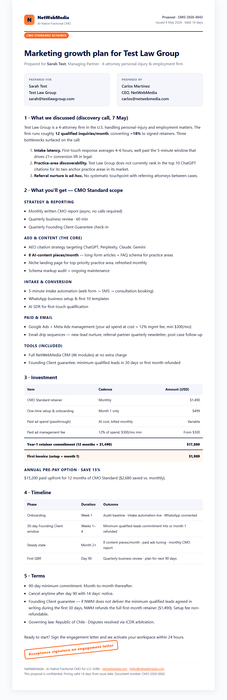
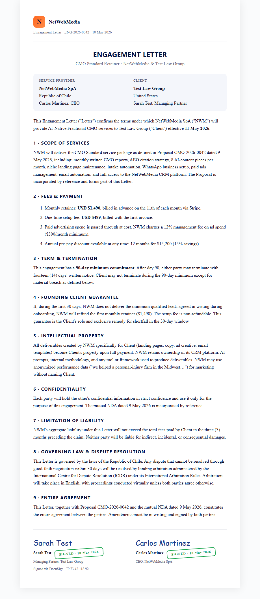
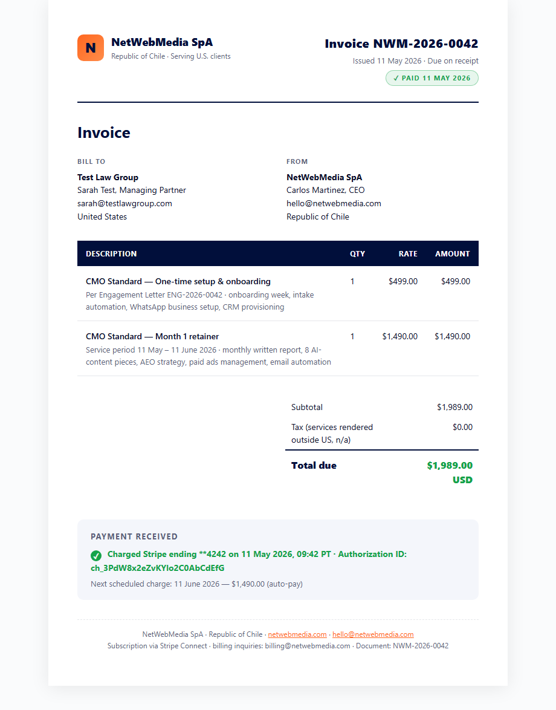

How we manage a sale, end to end — Sarah Test buys CMO Standard.
A simulation of the canonical NetWebMedia sales motion. We follow Sarah Test, managing partner at Test Law Group, from the moment her form submission lands at 14:22 on May 4 through the kickoff call eight days later. Every stage shows the CRM screenshot, the activity log, who owns the step, and what artifact gets created.
Inside this report
- The 8-stage funnel at a glance
- Stage 1 — New Lead arrives
- Stage 2 — Qualified (BANT check)
- Stage 3 — Discovery Scheduled
- Stage 4 — Discovery Done
- Stage 5 — Proposal Sent
- Stage 6 — Negotiation
- Stage 7 — Won
- Stage 8 — Active Client (onboarding)
- The 3 artifacts every sale generates
- Sales playbook — ownership matrix
The 8-stage funnel at a glance
NetWebMedia's own pipeline for inbound CMO-Standard buyers. Stages = pipeline columns in /crm-vanilla/pipeline.html. Probabilities are baked into the niche_config.
New Lead arrives
Trigger · form_submit on legal-services LPSarah found the AEO Brief #001 in her inbox Tuesday morning, clicked through to the legal-services landing page, and submitted the "Free 48-hour written audit" form. Within 2 minutes, the CRM creates the Contact + Deal and fires welcome-1.
- 2026-05-04 14:22systemForm submit · legal-services LP · "Free 48-hour written audit"
- 2026-05-04 14:22systemContact created · Deal "Test Law Group — CMO Standard" auto-created in Stage 1
- 2026-05-04 14:23systemSent · welcome-1 email · "Your NetWebMedia account is live"
- 2026-05-04 14:23systemWorkflow fired · Carlos notified via Slack #nwm-inbound
Qualified · BANT confirmed
Trigger · first human replySarah replies to welcome-1 within 30 minutes asking for an audit recommendation, and follows up on WhatsApp 14 minutes later. That's a real buyer. Carlos moves the deal to Qualified.

- 2026-05-04 14:22systemForm submit · legal-services LP
- 2026-05-04 14:48SarahReplied to welcome-1 — "Yes, looking for an audit + recommendation on CMO Standard"
- 2026-05-04 15:02SarahSent first WhatsApp · "Hi Carlos, got your email. When can we talk?"
welcome-2 at Day 3.
Discovery Scheduled
Trigger · calendar invite acceptedCarlos drops a Calendly link in WhatsApp. Sarah books a 30-minute slot for Thursday at 10am PT. Deal moves to Stage 3 automatically when the calendar event is created.

- 2026-05-04 15:08CarlosSent Calendly link via WhatsApp · 30 min discovery slot
- 2026-05-04 15:14SarahBooked · Thu May 7, 10:00 AM PT · auto-synced to NWM Calendars + Google Calendar
- 2026-05-04 15:14systemWorkflow fired · Deal moved to Stage 3 · pre-call brief queued for Carlos at T-30min
Discovery Done · 3 pain points captured
Trigger · call concluded · notes savedDiscovery call runs 32 minutes. Carlos uses the NWM AI Copilot to transcribe + extract the three pain points: intake latency, AEO citation gaps, ad-hoc referral nurture. These map directly to the CMO Standard scope — proposal can be written in < 10 minutes.
Proposal Sent
Trigger · proposal document attached to deal48 hours after the discovery call, Carlos sends Sarah a 4-page CMO Standard proposal: $1,490/mo + $499 setup, $17,880 year-1 commitment. Document is generated from the NWM proposal template, attached to the deal, and emailed with a tracking pixel. Sarah opens it within 2 hours and spends 8 minutes on it — revisits the "Pricing" section three times.

- 2026-05-09 09:14CarlosSent · CMO Standard Proposal — Test Law Group.pdf (4 pages)
- 2026-05-09 11:52SarahViewed proposal · 8 minutes · returned to "Pricing" 3x · re-read "Founding Client Guarantee" once
The full proposal is included as artifact #1 below.
Negotiation · 1 question answered
Trigger · reply to proposal with questionSarah emails the next morning: "Can we start month-to-month and switch to annual at month 4?" Carlos says yes — sends a revised engagement letter with that flexibility written in, plus the NDA. Done in 23 minutes.
- 2026-05-10 08:31SarahQuestion: "Can we start with month-to-month and switch to annual at month 4?"
- 2026-05-10 08:54CarlosYes — confirmed in writing · sent revised engagement letter + mutual NDA
Won · Engagement signed, first invoice paid
Trigger · DocuSign signed + Stripe charge succeedsSarah signs the engagement letter at 14:08 via DocuSign. The Won workflow fires: Stripe charges the first invoice ($1,989 = $499 setup + month-1 $1,490), engagement letter + NDA + invoice files are saved to the deal, the deal moves to Won, and the kickoff workflow takes over.



Active Client · Kickoff scheduled
Trigger · "Won → kickoff" workflowThe kickoff workflow fires the instant payment clears. Six onboarding tasks are created in the project-manager queue. Welcome email goes out from Carlos. Sub-account is provisioned with niche=law_firms preset. Kickoff call scheduled for Wednesday 10am PT. The 30-day Founding Client window starts.


- +0 mincustomer-successSend welcome email + kickoff call invite (Wed 10am PT)
- +15 minengineering-leadProvision NWM CRM sub-account · seed niche=law_firms · grant Sarah owner role
- Day 1cmoAEO baseline audit · 5 practice-area queries across ChatGPT/Claude/Perplexity
- Day 2engineering-leadBuild 5-minute intake automation · web form → SMS → consultation booking
- Day 5content-strategistDeliver content piece #1 (anchor practice-area pillar) for review
- Day 28customer-success30-day Founding Client check-in · confirm guarantee met
The 3 artifacts every CMO Standard sale generates
All three are templated and editable. Source HTML lives in docs/sales-management-simulation/artifacts/.
Artifact 1 · Proposal (CMO-2026-0042)
4-page proposal tailored to Test Law Group. Pulls the discovery-call notes into a "What we discussed" section, locks in pricing, and includes the Founding Client Guarantee. Sent via Documents module with view-tracking pixel.

Artifact 2 · Engagement Letter (ENG-2026-0042)
Mutually signed via DocuSign. 9 sections including Scope, Fees, 90-day minimum, Founding Client guarantee, IP, Confidentiality, Liability cap, and ICDR arbitration in Chile. The two signatures unlock everything downstream.

Artifact 3 · Invoice (NWM-2026-0042)
Issued and charged the same minute the engagement letter is signed. $499 setup + $1,490 month-1 = $1,989. Stripe Connect auto-charges. Subscription SUB-NWM-0042 created for the recurring $1,490/mo on the 11th of each month.

Sales playbook — who owns what
The ownership matrix the NWM team operates by. SLA = service-level commitment for the next action.
| Stage | Owner | SLA / Next action | Time budget | Tool | Artifact created |
|---|---|---|---|---|---|
| 1 · New Lead | System | Send welcome-1 within 2 min | 0 | Workflow engine | Contact + Deal record |
| 2 · Qualified | Carlos (CEO) | First human reply < 1h | 5 min | Conversations / WhatsApp | — |
| 3 · Discovery Scheduled | Carlos | Send Calendly within 30 min of qualifying | 2 min | Booking · Calendly | Calendar invite |
| 4 · Discovery Done | Carlos | Pain points captured within 24h of call | 42 min total | AI Copilot · Notes | Discovery notes on Contact |
| 5 · Proposal Sent | Carlos | Proposal delivered < 48h after discovery | 15 min (templated) | Documents · proposal template | Proposal PDF |
| 6 · Negotiation | Carlos | Reply to any question < 4h | 20–30 min | Email Builder | Revised engagement letter |
| 7 · Won | System + Carlos | Charge first invoice when LOI signed | 0 · automated | Stripe · Documents | Eng. letter signed · NDA · Invoice · Subscription |
| 8 · Active Client | project-manager → customer-success | Kickoff call within 7 days | Week 1 = onboarding | Tasks · Calendar · Automation | 6 onboarding tasks · 30-day check-in |
Roles, in order of involvement
| Role | Where they take over | What they own |
|---|---|---|
| Carlos (CEO) | Stages 2–6 | Discovery, proposal, close. The entire human-touch sales motion sits with Carlos for CMO Standard. (CMO Premium adds sales-director involvement.) |
| sales-director (agent) | Stage 1 triage | Lead scoring, batch outbound, pre-call brief generation. Backs up Carlos when inbound volume spikes. |
| engineering-lead | Stage 8 day 1–2 | CRM sub-account provisioning, intake automation build, integration wiring. |
| cmo (agent) | Stage 8 day 1+ | AEO baseline audit, content strategy kickoff, paid-ads setup. |
| content-strategist | Stage 8 day 5+ | Delivers 8 content pieces/month on the CMO Standard scope. |
| project-manager | Stage 8 entire | Owns the 6 onboarding tasks, timeline, and 30-day checkpoint. |
| customer-success | Stage 8 day 28+ | 30-day Founding Client check-in, QBR on day 90, renewal at month 11. |
| finance-controller | Stage 7 onward | Invoicing, AR aging, refund handling if Founding Client guarantee triggers. |
Failure modes & escalation
| Failure | Trigger | Action |
|---|---|---|
| Lead goes cold (Stage 1→2 stall) | No reply 7 days after welcome-1 | re_engagement sequence fires automatically; deal stays in Stage 1. |
| Discovery no-show | Calendar event passes without join | Auto-DM via WhatsApp + reschedule link; if 2nd no-show, deal closed-lost. |
| Proposal goes silent (Stage 5→6 stall) | No reply 5 days after proposal sent | Carlos personally follows up; if 14 days silent, deal closed-lost, contact moves to nurture. |
| Negotiation deadlock | Same objection raised 3x | Offer the Founding Client guarantee in writing; if still no, decline gracefully and stay in touch. |
| Payment fails at close | Stripe declines on Won fire | Workflow pauses · finance-controller notified · 24h retry · if still failing, deal reverts to Negotiation. |
| Founding Client guarantee triggers | 30-day check-in shows leads delivered < commitment | customer-success initiates refund of month-1 retainer; setup fee non-refundable; client may continue or part ways. |
This is the canonical motion for CMO Standard.
For CMO Premium ($2,990/mo) the playbook is the same but with sales-director leading stages 2–4 and Carlos joining for the proposal call. For AEO Audit ($997) the path collapses to stages 1, 4, and 7 — there's no negotiation or proposal step, just deliver the written audit.